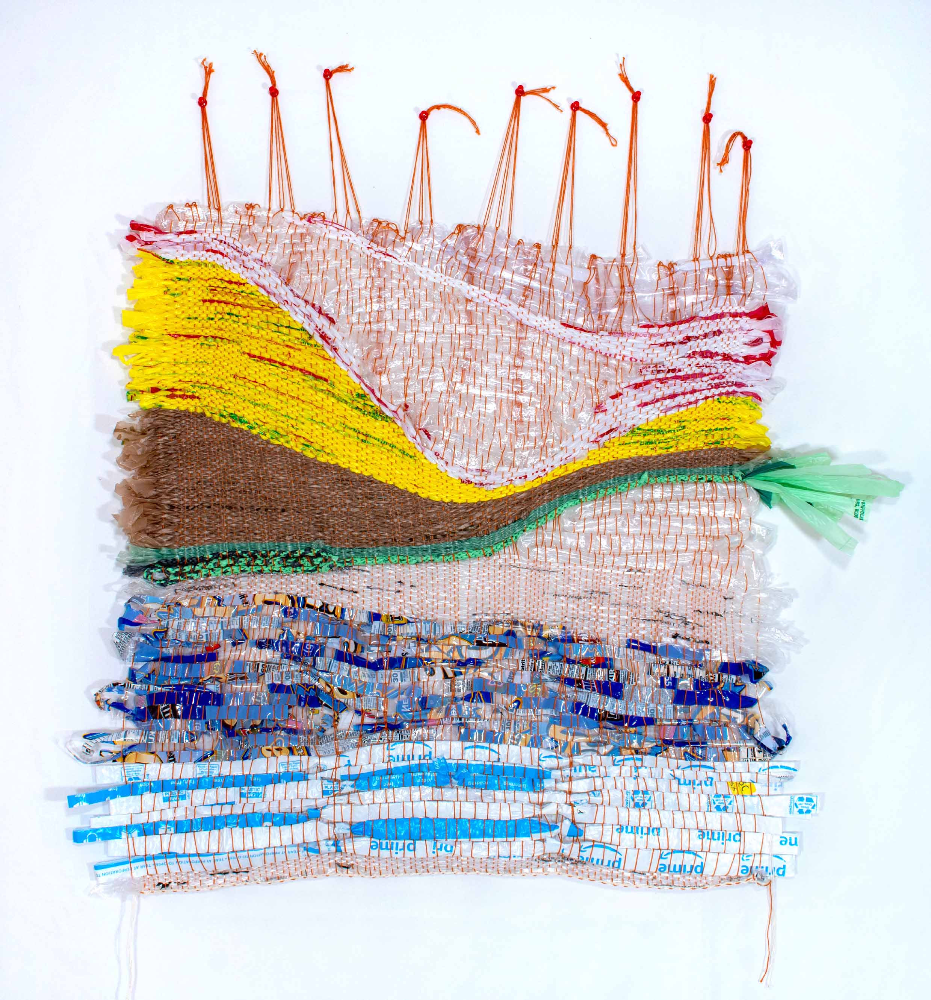

ONLY TIME MAKES IT HUMAN III

Moving with the idea of fabric and the garment from Only Time Makes It Human II, I wanted to5
make a completely flat weaving that could be manipulated into some sort of attire. I have yet to translate
this into a full-on garment, but this is a step towards a fabric woven entirely of plastic.
Types/brands of plastic: jewel bag, clear plastic, plastic amazon package, halloween candy bag,
clear plastic packaging, plastic rope woven from pet supplies plus bags, whole foods produce bag, mariano’s
bags, garden fresh bags, target bags, pita inn bags, zip lock bag, thick plastic bag.
2020, plastic grocery bags, warping yarn, 35"x 40"